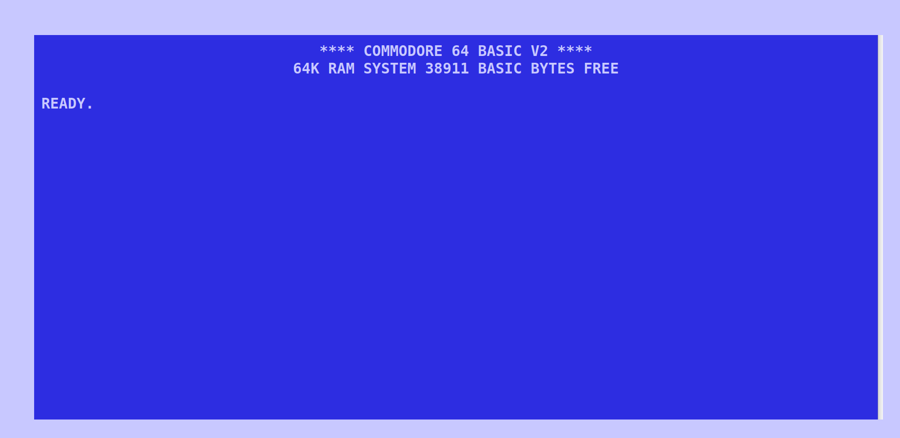
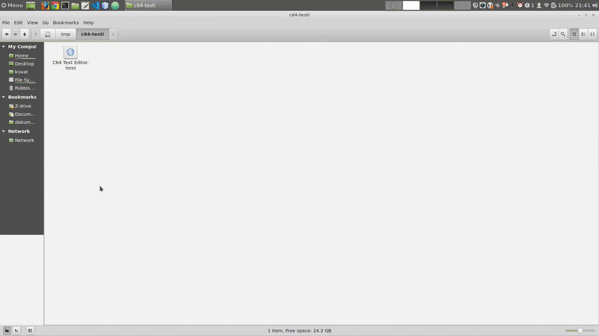

Projects
C64 Style Text Editor - in your web browser?
There is just something so cool about the look and feel of Commodore 64 to me so, once I just started to wonder, could it be possible to bring some of that vibe to what ever environment I am at. And sure thing it can easily be done with vanilla HTML5: a C64 Style Text editor.

It's not really all that usefull, but it does work pretty well as a todo or note taking app. Just save the page locally to your computer (as a web page) and all your writings will be saved. Then just open that file in a browser (make a shortcut of it for quick access) and save it again after you have made modifications (overwrite the original file, so you do not have to have many copies of the same thing. Works on atleast Chrome and Firefox.
Yeah, it's kinda pointless, but fun, so why not!
